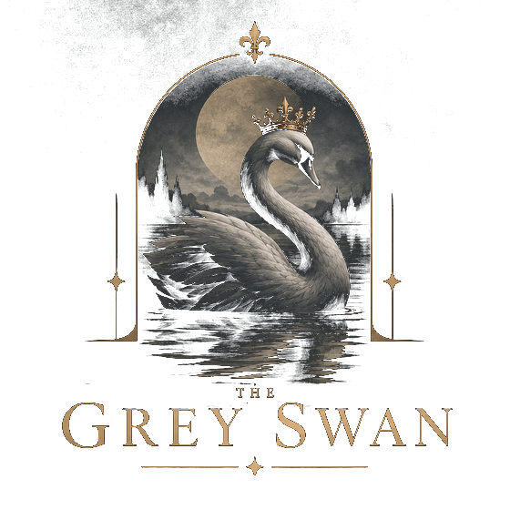

Smart publishing tools for authors and publishers
Check your manuscript the way a journal screening desk would, before you submit. Catch the missing ethics details, undefined abbreviations and uncited figures that send papers back to authors.
The Manuscript Pre-Submission Checker
Upload a Word manuscript and get a clear, colour-coded report in seconds. It recognises research articles, case reports, reviews and letters, and applies the right rules to each.
Structure
IMRaD sections, abstract length and keywords, adjusted for case reports, reviews and letters.
Abbreviations
Used before definition, never defined, defined twice or never used again, in the abstract and the main text.
Figures & tables
Every figure and table cited, in numerical order, with matching legends.
Ethics & consent
Committee name, approval number and date; written, verbal or waived consent; consent for minors.
Study details
Sample size, study period, inclusion and exclusion criteria, questionnaires, and trial or PROSPERO registration where required.
Declarations & references
Conflict of interest, funding, author contributions, data availability, and citations that match the reference list.
Upload
Drop in one or more .docx manuscripts.
Check
Every rule runs in seconds, tuned on a labelled test set of manuscripts.
Fix
See each issue by section, and download the full report as Excel.
The Reviewer Tracker
Finding reviewers who say yes is the slowest part of peer review. Log each invitation and its outcome, and the tracker shows who accepts, who delivers, how fast, and who never replies.
Log in seconds
Name, email, keywords and manuscript ID. Update each invitation as replies and reports arrive.
See who delivers
Acceptance rate, reports submitted and average turnaround, with each reviewer marked reliable, mixed or unresponsive.
Find the right people
Enter a manuscript's keywords and get reviewers ranked by expertise and reliability, with recent invites marked.

Built from the screening desk
The Grey Swan Editorial is an independent project grounded in hands-on experience of journal screening and peer review: checking manuscripts against journal requirements before review, and finding and inviting the reviewers who assess them.
The same avoidable problems came up again and again: missing ethics details, undefined abbreviations, uncited figures, and reviewer invitations that went unanswered for weeks. These tools turn that experience into checks and trackers anyone can use, so authors can submit with confidence and editorial teams can spend their time on what matters.
On the roadmap
- Reference checks: invalid DOIs and retracted papers, via Crossref
- PDF support: check manuscripts in PDF as well as Word
- AI review (opt-in): deeper checks of ethics, consent and consistency between abstract and results
Work with The Grey Swan
Pre-submission screening for authors, screening support for journals, or feedback on the checker: get in touch.